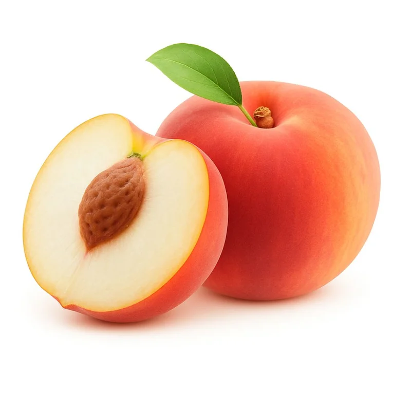

O pêssego possui uma história fascinante que atravessa milênios e
continentes. Embora seu nome científico sugira uma origem persa, a ciência botânica moderna
confirma que o fruto é nativo da China. Registros arqueológicos e textos antigos indicam que
os chineses já cultivavam pessegueiros entre 4.000a.c e 6000 a.C., especialmente nas regiões próximas ao Rio Yangtze
Na cultura chinesa, o pêssego sempre foi carregado de simbolismo, representando aNa cultura chinesa, o pêssego sempre foi carregado de simbolismo, representando a
imortalidade e a unidade. Através das rotas comerciais da Seda, a fruta viajou da Ásia Oriental
até a Pérsia (atual Irã), onde se adaptou tão bem que os gregos e romanos, ao encontrá-la lá,
acreditaram ser uma iguaria local, batizando-a de "maçã persa".
A expansão romana levou o cultivo para o restante da Europa. Séculos mais tarde, durante as
Grandes Navegações, exploradores espanhóis e portugueses introduziram a fruta nas
Américas. No Brasil, o pêssego chegou no século XVI, encontrando clima favorável nas regiões
mais frias do Sul e Sudeste. Hoje, a China permanece como o maior produtor mundial,
honrando o berço dessa fruta que conquistou o paladar global com sua doçura e aroma inconfundíveis.

ESPÉCIES
Pêssego comum
Pêssego de polpa branca
Nectarina
Pêssego clingstone
pêssego freestone
Pêssego Aurora
pêssego Chimarrita
pêssego dourado
COMO É O PLANTIO DO PÊSSEGO
NUTRIENTES DO PÊSSEGO
Energia
39 kcal
Água
88%
Carboidratos
9,5 g
Açúcares naturais
8,4 g
Fibras
1,5 g
Proteínas
0,9 g
Gorduras
0,3 g
Vitamina C
6,6 mg
Vitamina A
16 µg
Vitamina B1
0,02 mg
Vitamina B2
0,03 mg
Vitamina B3
0,8 mg
Potássio
190 mg
Magnésio
9 mg
Fósforo
20 mg
Cálcio
6 mg
Ferro
0,25 mg
BENEFÍCIOS DE CONSUMO DO PÊSSEGO
O pêssego (Prunus persica) é uma fruta bastante nutritiva e traz vários benefícios para a saúde quando
consumido regularmente. Por ser rico em água, ele ajuda na hidratação do corpo, sendo uma ótima opção
principalmente em dias quentes. Além disso, contém fibras que contribuem para o bom funcionamento do
sistema digestivo, ajudando a evitar problemas como a prisão de ventre
Outro ponto importante é a presença de vitaminas, especialmente a vitamina C, que fortalece o sistema
imunológico e auxilia na proteção do organismo contra doenças. Essa vitamina, junto com outros
antioxidantes presentes no pêssego, também contribui para a saúde da pele, ajudando a combater os
efeitos do envelhecimento precoce.
O pêssego ainda contém minerais como o potássio, que é essencial para o controle da pressão arterial e
para o bom funcionamento do coração. Por ser uma fruta de baixo valor calórico, ele também é uma boa
escolha para quem busca uma alimentação equilibrada sem abrir mão de algo doce e saboroso.
De modo geral, incluir o pêssego na alimentação pode trazer diversos benefícios, desde a melhora da
digestão até o fortalecimento do organismo, desde que seja consumido com moderação dentro de uma dieta balanceada.
RECEITAS DE PÊSSEGO
Suco de pêssego natural
Igredientes:
2 pêssegos maduros
200 ml de água gelada
Açúcar ou mel (opcional)
Modo De Preparo:
Bate tudo no liquidificador e pronto. Se quiser mais leve, coa; se quiser mais nutritivo, deixa com a fibra mesmo.
Sorvete caseiro de pêssego
Ingredientes
3 pêssegos congelados
1/2 lata de leite condensado
1 caixinha de creme de leite
Modo De Preparo:Bate tudo até ficar cremoso e leva ao freezer por algumas horas.
Doce de pêssego
Ingredientes:
4 pêssegos
1 xícara de açúcar
1/2 xícara de água
Modo De Preparo:Cozinha tudo em fogo médio até virar uma calda mais grossinha e os pedaços ficarem macios.
BIBLIOGRAFICA
Embrapa. pêssego: produção e cultivo.
FAO.rganização das Nações Unidas para a Alimentação e Agricultura.
SciELO.Artigos científicos sobre o cultivo do pêssego.